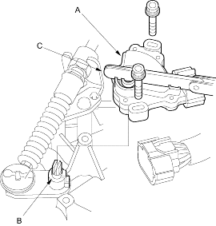
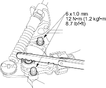
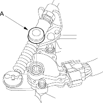
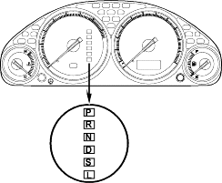

- Install the transmission range switch (A) gently on the control shaft (B) with holding the
 position with the 2.0 mm (0.08 in.) blade (C).
position with the 2.0 mm (0.08 in.) blade (C).

- Tighten the bolts on the transmission range switch while you continue to hold the position.
Do not move the transmission range switch when tightening the bolts. Remove the feeler gauge.

- Connect the connector securely, then install the transmission range switch shaft cap (A).

- Turn the ignition switch ON (II). Move the shift lever through all gear positions and check the transmission range switch synchronisation with the A/T gear position indicator.

- Allow the wheels to rotate freely, then start the engine.
- Move the shift lever through all gear positions and verify the following:
- The engine will not start in any position other than or
 .
. - The back-up lights come on when the shift lever is in
 position.
position.
- The engine will not start in any position other than